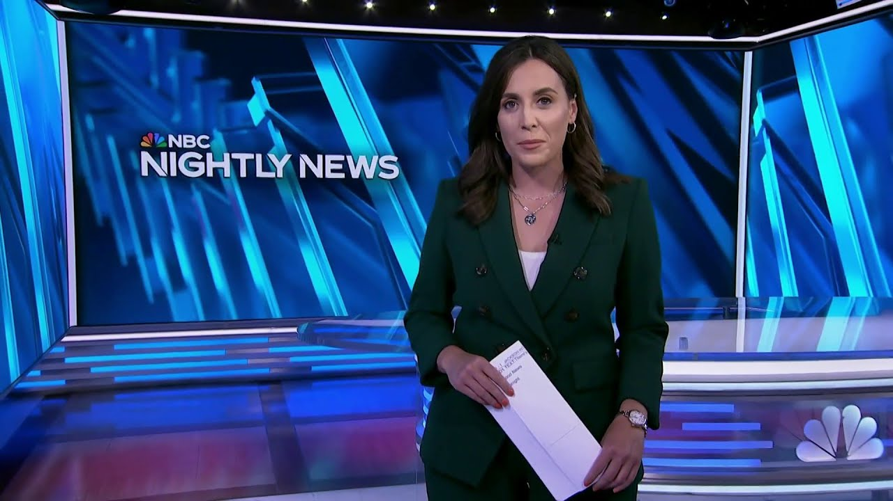

【NBC News 20250707 德克萨斯州灾难性山洪｜国际贸易最后期限｜国家公园人员短缺问题】
Summary: Tonight's coverage focuses on catastrophic flash floods in Texas, international trade deadlines, and national park staffing challenges.
摘要： 今晚的报道聚焦德克萨斯州灾难性山洪、国际贸易最后期限以及国家公园人员短缺问题。

⏱️ Estimated Reading Time: 35 min
📚 四级生词 📚 六级生词 📚 雅思生词 📚 托福生词 📚 专八生词 📚 SAT生词 📚 考研生词 📚 GRE生词 📚 高考生词 📚 其它生词生词
Tonight, the desperate search for survivors in Texas with more rain making rescues riskier tonight.
今晚，德克萨斯州展开紧急搜救幸存者的行动，持续的降雨使救援工作更加危险。
Hundreds of first responders combing Hill Country to try to find anyone left alive.
数百名急救人员正在山区仔细搜寻，试图找到任何幸存者。
Nearly 80 people killed so far in those devastating flash floods.
这场毁灭性山洪已造成近80人死亡。
Dozens still missing, including girls from a sleep away camp.
数十人仍下落不明，包括一个夏令营的女孩们。
Our correspondent getting a view from above with the Coast Guard and on the ground, catastrophic destruction.
我们的记者随海岸警卫队从空中观察，地面则是灾难性的破坏景象。
The flood survivors now sharing more about their terrifying escapes.
洪水幸存者正在分享他们惊险逃生的经历。
I've seen it flood, but I've never seen it come up this high.
我见过洪水，但从没见过水位涨得这么高。
What they saw while the water rose faster than they could have imagined.
他们目睹了水位以难以想象的速度上涨。
More than 20 feet in about an hour, plus the threat of more rain in the flood zone right now.
约一小时内水位上涨超过20英尺，目前洪水区还面临更多降雨威胁。
Also tonight, more bad weather means delays for many as millions head home after the holiday weekend.
此外，恶劣天气导致假日周末结束后数百万人返程延误。
And the new date to circle just days out from a White House deadline to reach trade deals to avoid tougher tariffs.
距离白宫设定的达成贸易协议以避免更高关税的最后期限只剩几天。
Plus, what the president's saying late today about Elon Musk's third party announcement.
另外，总统今天晚些时候对埃隆·马斯克宣布成立第三政党的回应。
President Trump set to meet with Israel's Prime Minister tomorrow as the push for a Gaza ceasefire ramps up.
特朗普总统将于明日会见以色列总理，推动加沙停火的努力正在加强。
A strip mall exploding overnight.
一夜之间发生的商业区爆炸事件。
How a massive car crash started at all.
一起重大车祸是如何发生的。
Look at that.
看看这个。
National parks more popular than ever.
国家公园比以往任何时候都更受欢迎。
How they're handling more visitors with fewer staff this summer.
今年夏天他们如何在人员减少的情况下应对更多游客。
And there's good news tonight about a small town marking its historic holiday milestone.
今晚还有一个小镇庆祝历史性节日里程碑的好消息。
This is NBC Nightly News with Holly Jackson.
这里是霍莉·杰克逊主持的NBC晚间新闻。
Good evening.
晚上好。
We are coming on the air tonight with new complications and new evacuations from more rain near where hundreds of rescuers are trying to find any survivors of that horrific flash flooding catastrophe.
今晚我们报道新的复杂情况，在数百名救援人员寻找山洪灾难幸存者的地区附近，更多降雨导致新的疏散。
A staggering number nearly 80 people killed among them.
死亡人数惊人，近80人遇难。
One at an all girls camp along the banks of the Guadalupe River.
其中包括瓜达卢佩河畔一个女子夏令营的遇难者。
We are getting our first look now at these scenes from that camp.
我们首次看到来自该夏令营的现场画面。
Rescue dogs, flipped cars, smashed cabins, its owner believed to have died trying to save campers, some of whom were able to escape a lie.
搜救犬、翻倒的车辆、损毁的小屋，营地主人据信为营救营员而遇难，其中部分人成功逃生。
You'll hear from one of those teenagers tonight as you can see a truck bed full of girls making their way out.
您将听到其中一名青少年的讲述，画面显示一卡车女孩正在撤离。
And new video as the Coast Guard rescued others in the area.
海岸警卫队在该地区救援其他人的新视频。
Look at this pulling this man up in a basket.
看这个用吊篮救起这名男子的画面。
But among the missing 11 people from camp mystic, a local fire chief believed to be washed away in the floods.
但神秘夏令营仍有11人失踪，其中包括据信被洪水冲走的一名当地消防队长。
The water rising so fast, it carried away whole houses.
水位上涨如此之快，冲走了整栋房屋。
Look at this one slamming into a bridge.
看这栋房屋撞击桥梁的画面。
Now tonight new warnings to get out ASAP with thunderstorms set to swamp an already saturated region overnight with any rain adding more risk to this massive response.
今晚发布新的紧急撤离警告，雷暴将使已饱和的地区再遭淹没，任何降雨都会给大规模救援增加风险。
We have team coverage tonight starting with our Ryan Chandler on the ground for us.
我们有多路记者报道，首先是在现场的瑞安·钱德勒。
Ryan, good evening.
瑞安，晚上好。
Well, howdy, that worst weather has arrived.
你好，最恶劣的天气已经到来。
Some very unwelcome rain coming here as these rescuers move to try and find signs of life and triggering that alert that so many people here have learned the fear of supporting people who move to higher ground.
不受欢迎的降雨来临，救援人员正在寻找生命迹象，触发警报，当地许多人已学会帮助人们转移到高处的恐惧。
Rising water, threatening the Texas Hill Country tonight as so many are still missing along the Guadalupe.
上涨的水位今晚威胁德克萨斯山区，瓜达卢佩河沿岸仍有众多失踪者。
Families yearn for answers more than 60 hours after catastrophic flooding devastated this area Friday.
周五灾难性洪水袭击该地区60多小时后，家属们渴望得到答案。
At least 79 people are reported dead across central Texas.
据报道，德克萨斯州中部至少有79人死亡。
Most of the deaths along this river.
大多数死亡发生在该河沿岸。
Officials say 68 people are dead in Kerr County alone.
官员称仅克尔县就有68人死亡。
Among them, 28 children, some young girls at camp mystic washed away.
其中包括28名儿童，神秘夏令营的一些女孩被冲走。
It was nothing short of horrific to see what those young children went through.
看到这些儿童的遭遇只能用恐怖来形容。
10 girls and a counselor are still missing.
仍有10名女孩和1名辅导员失踪。
Is the priority rescue at this point or recovery?
目前优先考虑救援还是遗体搜寻？
So obviously we're going to do our best to try to rescue anybody that's still out there and needing rescue.
显然我们将尽全力救援任何仍需要救助的人。
We joined the Coast Guard as they searched from the sky, a thousand feet above the river.
我们随海岸警卫队从河面上空一千英尺处进行搜索。
From up here you can see the swollen river banks from miles.
从这里可以看到数英里外涨水的河岸。
The US Coast Guard is scanning this entire area for heat signatures that may lead to rescues or recoveries.
美国海岸警卫队正在扫描整个区域寻找可能导致救援或寻回的热信号。
But after they told me on this flight, they did not spot any signs of life.
但他们在这次飞行中告诉我，没有发现任何生命迹象。
We're desperate at this point.
我们现在非常绝望。
Allison Edwards rushed here from Austin to find her father Steve, who she says was swept away while saving her mother from their RV.
艾莉森·爱德华兹从奥斯汀赶来寻找父亲史蒂夫，她说父亲在从房车中救母亲时被冲走。
What keeps you holding on to hope that you'll find your dad?
是什么让你坚持希望找到父亲？
Our dad's a fighter.
我们的父亲是个战士。
He's always been a fighter and I just I know he has a strong will and he do everything he could to get back to us.
他一直都是战士，我知道他有坚强意志，会尽一切努力回到我们身边。
The National Weather Service giving its timeline of when it alerted people to potential flooding.
国家气象局提供了洪水预警时间表。
As Kerville was alerted early Thursday, a flash flood warning tagged as considerable came in at 114 Friday morning.
克尔维尔周四早些时候收到警报，周五上午11:4发布了"严重"山洪预警。
They say that tag automatically triggers cell phone alerts and the White House tonight saying the National Weather Service did their job.
该标签会自动触发手机警报，白宫今晚表示国家气象局履行了职责。
This new video showing the moment Rita Olsen and her family realized the flood waters were approaching.
新视频显示丽塔·奥尔森和家人意识到洪水来临的时刻。
A first responder coming to her house, urging them to evacuate.
急救人员来到她家，敦促他们撤离。
Some places seeing more than 20 inches of rain in the last three days.
过去三天一些地区降雨量超过20英寸。
I've seen it flood but I've never seen it come up this high.
我见过洪水，但从没见过水位这么高。
This video taken from a bridge in Kerr County Friday shows just how fast the river rose.
周五在克尔县一座桥上拍摄的视频显示河水上涨速度。
You can see a wave of water rush in and in little more than half an hour, all this debris piling up.
可以看到一波水涌来，半小时内就堆积了这么多残骸。
And then in the distance, a house crashing here, pie above what had just been a creek.
然后远处一栋房屋倒塌，就在曾经是小溪的地方。
This is the worst I've seen it.
这是我见过最严重的情况。
Tonight for all those who call central Texas home, desperation grows as each hour passes.
今晚对所有以德克萨斯中部为家的人来说，绝望随着时间流逝而加剧。
Ryan is back with us now and Ryan, we've now heard President Trump suggests he will visit the area later this week.
瑞安回到我们这里，我们听说特朗普总统暗示本周晚些时候将访问该地区。
That's right, Halley.
是的，霍莉。
President Trump saying late today he's probably coming to this area of Texas on Friday.
特朗普总统今天晚些时候表示可能于周五来到德克萨斯该地区。
That comes as the White House moves to defend the National Weather Service and the timeline of its warnings.
与此同时，白宫为国家气象局及其预警时间表辩护。
Halley.
霍莉。
Ryan Chandler, near where those first responders are taken off in Kerrville, Texas.
瑞安·钱德勒，在德克萨斯州克尔维尔急救人员所在位置附近。
We're also learning more tonight about the victims of these floods, including the youngest once and the stories of survivors in central Texas.
今晚我们还了解到更多洪水遇难者情况，包括最年轻的遇难者以及德克萨斯中部幸存者的故事。
Our Morgan Chesky reports.
摩根·切斯基报道。
I think while it was going on, I kind of felt like a sense of numbness.
我觉得当时发生时，我感到一种麻木。
For Stella Thompson, reality still sounds unbelievable.
对斯特拉·汤普森来说，现实仍然难以置信。
The 13 year old, one of hundreds evacuated from camp Mystic, amid a river, turned nightmare.
这名13岁女孩是从神秘夏令营撤离的数百人之一，河流变成了噩梦。
You'd see kayaks like in trees and it was kind of horrific because we had no idea.
你会看到卡在树上的皮划艇，这很可怕，因为我们完全不知道。
There were huge trees ripped out of the ground and it didn't look like camp Mystic anymore.
大树被连根拔起，营地面目全非。
Now as uncertainty hangs heavy, tragic closure coming to many.
在沉重的不确定性中，许多人得到了悲剧性的结局。
Renée Smistrelah, Eloise Peck and Janie Hunt, confirmed as three of the lives lost at camp Mystic, where 10 campers and one counselor still remain missing.
蕾妮·斯密斯特拉、埃洛伊丝·佩克和珍妮·亨特被确认为神秘夏令营遇难者中的三人，仍有10名营员和1名辅导员失踪。
Smistrel is family sharing while not the outcome we prayed for.
斯密斯特拉的家人表示，虽然这不是我们祈祷的结果。
We are thankful she was with her friends and having the time of her life.
我们感激她与朋友在一起，度过了生命中最美好的时光。
The family of fellow camper Eloise Peck sharing, the family is grieving and processing this unimaginable loss.
营员埃洛伊丝·佩克的家人表示，他们正在悲痛中接受这难以想象的损失。
Here in camp Mystic, where volunteers are still scouring the river, friends of the family say owner Dick Aslan sprang into rescue mode, putting multiple girls inside an SUV as those waters rose.
在神秘夏令营，志愿者们仍在搜寻河流，家人的朋友表示，随着水位上涨，营地主人迪克·阿斯兰立即展开救援，将多名女孩安置在SUV中。
He tried to drive to safety, but was soon overtaken.
他试图驾车前往安全地带，但很快被洪水追上。
On social media, his grandson riding, if he wasn't going to die of natural causes, this was the only other way, saving the girls that he so loved.
他的孙子在社交媒体上写道：如果不是自然死亡，这是他唯一会选择的方式，拯救他深爱的女孩们。
The first text was already under bad.
第一条短信就已经很糟糕。
That's what worked her up.
这让她很激动。
I mean, it came up so fast.
我是说，水位上涨太快了。
She and Jimmy Hobbit, Jeep or in Julie Rangstale, are still coming to terms with the abrupt loss of their beloved sister Jane.
她和吉米·霍比特、吉普或朱莉·朗斯特尔仍在接受突然失去心爱的姐姐简的事实。
The long time head of the heart of the hills camp nearby, which also flooded.
附近山区心灵夏令营的长期负责人，该营地也遭遇洪水。
That's like she devoted her entire life to helping these girls.
她毕生致力于帮助这些女孩。
She just wanted to me, like she just wanted to get back her childhood experiences to other children.
她只是想，就像她想把自己的童年经历传递给其他孩子。
He gave her so much joy that I think that's what drew her to it.
这带给她如此多快乐，我想这就是吸引她的原因。
Got amid so much loss, stories of survival and heroism.
在如此多损失中，也有生存和英勇的故事。
It's a miracle that she did survive it.
她能幸存真是个奇迹。
I mean, it was it's a God thing to me.
我是说，这对我来说是上帝的旨意。
Carl Jeeter spotting this woman clutching onto a tree as floodwaters rush beneath.
卡尔·吉特发现这名女子紧抱树木，脚下洪水奔涌。
Her car longsense washed away.
她的车早已被冲走。
Jeeter flagging a DPS agent to radio firefighters who were finally able to rescue her after the more than four hour or deal.
吉特示意一名公共安全部官员用无线电联系消防员，经过四个多小时终于救出她。
I mean, it was like it had to have been like swimming a marathon.
我是说，这就像游了一场马拉松。
I mean, it just I don't get I mean, I'm not going to try to understand it.
我是说，我就是不明白，我不打算尝试理解。
It's just absolutely a miracle.
这绝对是个奇迹。
Morgan Chesky is joining us now from Carville and Morgan, you know, our viewers may not know, this is your hometown.
摩根·切斯基从卡尔维尔加入我们，摩根，观众可能不知道这是你的家乡。
You know this place.
你了解这个地方。
You know these people.
你认识这里的人。
And I wonder if you could share more about what it's been like covering such a difficult and nightmarish moment for your community.
我想知道你是否能多分享一些报道家乡如此艰难噩梦般时刻的感受。
Yeah, Halle, there are really aren't the words.
是的，霍莉，真的无法用言语形容。
You cover disasters to some degree for a living and then it hits your own hometown and you're at an absolute loss.
你以报道灾难为生，但当它发生在自己家乡时，你会完全不知所措。
I am fortunate enough to say that my family is safe.
我很幸运我的家人安全。
My mother did evacuate overnight as the waters rose, but we do have friends who are directly impacted by this and please know that our hearts are with them forever through this.
我母亲确实在水位上涨时连夜撤离，但我们有朋友直接受到影响，请知道我们的心永远与他们同在。
Halle, I will say that the heartbreak is only added to by scenes such as the one I'm about to show you now.
霍莉，我要说，像我即将展示的场景只会增加心碎。
This is a debris pile about a hundred yards from where we're standing that crews have been digging through for the last several hours.
这是距离我们站立处约100码的残骸堆，工作人员已挖掘数小时。
My mother tells me that they pulled two bodies from that that will likely only be added to what is a tragic death toll here.
我母亲告诉我他们从中找到两具遗体，这只会增加本已悲惨的死亡人数。
Morgan Chesky in his hometown of Curville.
摩根·切斯基在他的家乡克尔维尔。
Thank you for more.
谢谢你的报道。
Let's bring in NBC New York meteorologist Violet Ayas and Violeta with more rain on the way.
让我们连线NBC纽约气象学家维奥莱塔·阿亚斯，更多降雨即将来临。
The overnight hours could get dangerous again, right?
夜间可能再次变得危险，对吗？
Yeah, Halle, it's the last thing we want to hear, of course, but we've had showers and thunderstorms ongoing across central Texas all afternoon, prompting numerous flash flood warnings.
是的，霍莉，这当然是我们最不想听到的，但整个下午德克萨斯中部持续有阵雨和雷暴，引发多次山洪预警。
You can see they've been more concentrated here between San Angela, Waco and Dallas, but scattered and also on the strong side from Curville all the way down through the Guadalupe River, still packing a punch with those heavier downpours.
可以看到它们更集中在圣安吉拉、韦科和达拉斯之间，但从克尔维尔一直到瓜达卢佩河也有分散的强降雨。
So we can expect the flood threat to continue through this evening, putting five million people at risk rainfall rates in some of those heavier downpours could reach up to three inches per hour.
因此我们预计洪水威胁将持续到今晚，500万人面临风险，某些强降雨地区降雨量可达每小时3英寸。
So something to keep in mind here through Monday, the unsettled pattern is going to continue.
因此需要记住，直到周一这种不稳定天气模式将持续。
We could be seeing an additional one to three inches of rainfall with some locally higher amounts before we finally get some dry air to move in beginning Tuesday and lasting the rest of this upcoming week, Halle.
我们可能还会看到1到3英寸的额外降雨，局部地区更多，直到周二干燥空气最终到来并持续到本周剩余时间。
Violeta Ayas, thank you.
维奥莱塔·阿亚斯，谢谢。
And more severe weather in other parts of the country is making for a messy ride home for some of the millions of Americans traveling after the holiday weekend.
美国其他地区的恶劣天气让假期周末后出行的数百万美国人中的一些人回家之路变得混乱。
Shakyal Brewster is at Chicago, O'Hare Airport tonight.
今晚，Shakyal Brewster在芝加哥奥黑尔机场。
So Shack, how's it looking?
Shack，情况如何？
Well, Halle, some of that severe weather we just heard about slowing things down at major airports, including here at Chicago's O'Hare, where an afternoon storm led to some hour long delays, another system in Florida forcing temporary ground stops.
Halle，我们刚刚提到的恶劣天气正在拖慢主要机场的运行，包括芝加哥奥黑尔机场，下午的暴风雨导致了一些长达一小时的延误，佛罗里达州的另一个天气系统迫使航班临时停飞。
All of this happening on the busiest travel day of an already record-setting holiday weekend.
这一切发生在创纪录的假期周末中最繁忙的出行日。
Triple A says more than 72 million Americans were traveling this holiday, including a record number of folks on the road, some drivers taking advantage of those lower gas prices down 36 cents on average compared to last year.
AAA表示，超过7200万美国人在这个假期出行，其中包括创纪录数量的公路旅客，一些司机利用了比去年平均下降36美分的较低油价。
Halle. Shakyal Brewster at Chicago's O'Hare Airport, thank you.
Halle。芝加哥奥黑尔机场的Shakyal Brewster，谢谢。
Also tonight, a new deadline date for tougher tariffs on multiple countries that could spike the price you pay with the White House ready to make moves tomorrow on all of it.
今晚还有消息，针对多个国家的更严厉关税的新截止日期可能会推高你支付的物价，白宫准备明天就这一切采取行动。
Emeish Alcindor reports.
Emeish Alcindor报道。
Tonight, the global economy braces for what comes next, as President Trump says countries that don't make trade deals by this Wednesday, July 9th will now pay skyrocketing tariffs starting August 1st.
今晚，全球经济为接下来的事情做好准备，特朗普总统表示，未能在7月9日周三前达成贸易协议的国家将从8月1日起支付飙升的关税。
I think we have most countries done by July 9th, either a letter or a deal.
我认为我们会在7月9日前与大多数国家完成，要么是一封信，要么是一份协议。
This morning, the Treasury Secretary warning that those take it or leave it offers will come at steep prices.
今天早上，财政部长警告说，这些要么接受要么放弃的提议将付出高昂代价。
You will boomerang back to your April 2nd terrible level, so I think we're going to see a lot of deals very quickly.
你会回到4月2日的糟糕水平，所以我认为我们会很快看到很多协议。
Back in April at the White House, the President laying out a series of increase in tariffs on dozens of countries, 30 percent for South Africa, 24 percent for Japan, 20 percent for the European Union.
今年4月，总统在白宫宣布对数十个国家提高关税，南非30%，日本24%，欧盟20%。
The President then pausing most of those rates for negotiations.
总统随后暂停了大部分税率以进行谈判。
So far, the U.S. has only announced frameworks of deals with a few countries, including the UK, Vietnam, and China.
到目前为止，美国仅宣布了与少数国家的协议框架，包括英国、越南和中国。
A White House economic adviser saying this.
一位白宫经济顾问这样说。
It's important that countries line up to make concessions to get those deals, to convince the President that they should get lower terror rates.
各国必须排队做出让步以获得这些协议，说服总统他们应该获得较低的关税税率。
Meanwhile, as President Trump and Republicans continue to celebrate the passage of the so-called one big beautiful bill, Elon Musk wants a close Trump ally announcing the formation of a new political party after lashing out the massive bill for adding too much to the national debt.
与此同时，特朗普总统和共和党人继续庆祝所谓的“一项大美丽法案”的通过，埃隆·马斯克希望一位特朗普的亲密盟友在猛烈抨击该法案增加过多国债后宣布成立一个新政党。
Moments ago, the President responded.
不久前，总统回应道。
I think as we dig in, it's just out of third party.
我认为当我们深入研究时，这只是第三方的事情。
We have a tremendous success with the Republican Party, so he can have fun with it.
我们在共和党方面取得了巨大成功，所以他可以自娱自乐。
Yamiche Alcendor, NBC News.
Yamiche Alcendor，NBC新闻。
Back here in Washington, a high profile one-on-one with President Trump set to meet with Israel's Prime Minister tomorrow and new developments in the push for a Gaza ceasefire.
回到华盛顿，特朗普总统明天将与以色列总理举行高调的一对一会晤，加沙停火努力的新进展。
Danielle Hemamjan is monitoring all of it.
Danielle Hemamjan正在关注这一切。
Danielle, what can we expect?
Danielle，我们能期待什么？
Well, Haley, we've been here before talking about a possible ceasefire deal only for negotiations to fall apart.
Haley，我们之前在这里讨论过可能的停火协议，但谈判最终破裂。
Benjamin Netanyahu is now on his way to Washington for his third trip in six months, as his negotiators resume talks in Doha.
本杰明·内塔尼亚胡正在前往华盛顿的路上，这是他六个月内的第三次访问，而他的谈判代表在多哈恢复会谈。
This time, his recent success in Iran might give him the political support he needs to reach a deal with Hamas, which would bring the remaining hostages home and end the bloodshed in Gaza.
这一次，他在伊朗的最近成功可能为他提供与哈马斯达成协议所需的政治支持，这将使剩余人质回家并结束加沙的流血事件。
Netanyahu has called Hamas's latest demands unacceptable.
内塔尼亚胡称哈马斯的最新要求不可接受。
Those include assurances, fighting won't resume if no permanent truce is reached.
这些要求包括保证，如果未达成永久停火，战斗不会恢复。
This comes after President Trump said a deal could be reached this week.
此前特朗普总统表示本周可能达成协议。
Tally. Danielle Hemamjan, thank you.
Tally。Danielle Hemamjan，谢谢。
Back now with the dramatic explosion in Utah, look at that.
现在回到犹他州的戏剧性爆炸，看看那个。
After a three-car crash, sent one of them into a strip mall, more than 60 firefighters then worked to put out the flames from a ruptured gas line.
三车相撞后，其中一辆冲进一家购物中心，60多名消防员随后努力扑灭破裂的天然气管道引发的火焰。
Officials say two good Samaritans helped get the driver and the passenger out of the burning car with our team's inside look at America's national parks as they face a big test this summer.
官员表示，两位好心人帮助司机和乘客从燃烧的汽车中逃生，同时我们的团队深入报道美国国家公园今年夏天面临的重大考验。
For a lot of folks, a classic summer vacation often starts with a trip to a national park, but this season, the government's staffing cuts mean a big test for some iconic sites that draw a big crowd.
对许多人来说，经典的暑假通常从国家公园之旅开始，但这个季节，政府的裁员意味着一些吸引大量游客的标志性景点面临重大考验。
Our national parks have never been more popular.
我们的国家公园从未如此受欢迎。
It's just been beautiful and we've loved every minute of it.
这里很美，我们享受每一分钟。
With a record breaking, 331 million visits across hundreds of sites last year alone, but this year, Taurus could be heading into uncharted territory.
去年数百个地点的访问量创下3.31亿人次的纪录，但今年，国家公园可能进入未知领域。
Sighting internal data from the interior department, a watchdog groups as a national park service has lost 24% of its permanent staff since January.
根据内政部的内部数据，一个监督组织表示国家公园管理局自1月以来失去了24%的永久员工。
I think if I were to describe the smokies and a word or a phrase, it would be a rollercoaster.
如果要用一个词或短语描述大烟山，我会说是过山车。
Jackie Harp is a CEO of Smokies Life, a nonprofit offering educational services and support to Great Smokie Mountains National Park.
Jackie Harp是Smokies Life的首席执行官，该非营利组织为大烟山国家公园提供教育服务和支持。
She says her organization has been stepping in for years, helping the most visited National Park in the country.
她表示，她的组织多年来一直在介入，帮助这个美国访问量最大的国家公园。
And that this year, people may notice some setbacks.
今年人们可能会注意到一些挫折。
There's been some reduced capacity around things like campgrounds and picnic areas.
露营地和野餐区等地方的容量有所减少。
Those all opened later than typical.
这些地方的开放时间都比往常晚。
Katie Brandard and her family drove in from Nebraska.
Katie Brandard和她的家人从内布拉斯加州开车过来。
They said they were aware of possible disruptions even before they left home.
他们说，在离家前就意识到可能会有干扰。
We did things like look ahead on the National Park websites to see where they're extra passes we need to get or admission kind of vouchers if they were going to kind of cut back on the number of tourists coming through the area.
我们提前在国家公园网站上查看是否需要额外的通行证或入场券，以防他们限制该地区的游客数量。
And challenges aren't just isolated to the smokies, they're happening in national parks across the country.
挑战不仅限于大烟山，全国各地的国家公园都在发生。
At National Park Service official telling NBC News at Yosemite, seasonal hirings were delayed earlier in the year.
国家公园管理局官员告诉NBC新闻，优胜美地的季节性招聘在今年早些时候被推迟。
And as a result, some staff, including scientists and park managers, took on extra duties like cleaning restrooms and trash maintenance, which lasted for about a month.
因此，一些员工，包括科学家和公园管理人员，承担了额外的职责，如清洁洗手间和垃圾维护，持续了大约一个月。
That official adding the park is now well staffed and they can provide safe, meaningful experiences for visitors.
该官员补充说，公园现在人员充足，可以为游客提供安全、有意义的体验。
Here we go. Jan Bergman visiting Yosemite from Ohio telling us he noticed large crowds, but nothing big enough to ruin his trip.
我们开始吧。来自俄亥俄州的Jan Bergman在参观优胜美地时告诉我们，他注意到人群很大，但不足以毁掉他的旅行。
We started a book to our travel. So we came, figured we would just make the best of it.
我们为旅行做了计划。所以我们来了，想着我们会尽力而为。
And it's not just tourists, some nearby businesses saved their facing challenges.
不仅仅是游客，附近的一些企业也面临着挑战。
Lee Zimmerman owns and operates Rush Creek Lodge.
Lee Zimmerman拥有并经营Rush Creek Lodge。
Bookings have been way, way down this year for the summer in particular.
今年的预订量大幅下降，尤其是夏季。
People were scared about whether the park's going to be sufficiently staffed and ended up not being a problem, but the time that scared people away.
人们担心公园是否会有足够的人手，结果这不是问题，但当时吓跑了人们。
Over at Crater Lake National Park in Oregon, Kevin Heatley says he became the park superintendent in January and nearly five months later, he stepped down, citing the strain on staffing.
在俄勒冈州的火山口湖国家公园，Kevin Heatley表示他在1月成为公园负责人，近五个月后因人员压力辞职。
Crater Lake is getting by on a thread right now.
火山口湖现在勉强维持。
We have employees that are putting in routinely on a two week pay cycle, putting in 60 hours of overtime on snow removal.
我们的员工通常在两周的工资周期内投入60小时的加班时间进行除雪。
That's just not sustainable.
这是不可持续的。
We reached out to the National Park Service regarding changes to staffing this year, but haven't heard back yet.
我们联系了国家公园管理局询问今年人员配置的变化，但尚未收到回复。
While the summer has been running smoothly, some fear with the future could hold for America's crown jewels.
尽管夏季运行顺利，一些人担心美国瑰宝的未来。
The National Park System is iconic.
国家公园系统是标志性的。
It is beloved by the American people.
它深受美国人民的喜爱。
If you want to shoot yourselves in the foot, mess with the National Park System.
如果你想自毁前程，就搞乱国家公园系统。
Kathy Park and BC News, Great Smokey Mountains National Park.
Kathy Park和BC新闻，大烟山国家公园。
When we come back, there's good news tonight about a small town with big energy going all out on this holiday weekend.
稍后回来，今晚有好消息，一个小镇在这个假期周末全力以赴，充满活力。
And as we close out this holiday weekend, there is good news tonight about a small town's big moment, a celebration of community and tradition.
随着我们结束这个假期周末，今晚有好消息，一个小镇的重要时刻，社区和传统的庆祝活动。
In Bristol, Rhode Island, 2025 is the new 1785.
在罗德岛州的布里斯托尔，2025年是新的1785年。
This is Americana right here.
这就是美国风情。
That's because the 4th of July is this town's time to shine.
因为7月4日是这个小镇闪耀的时刻。
I love going down the line.
我喜欢沿着队伍走。
Happy 4th. Happy 4th and every night.
7月4日快乐。7月4日快乐，每晚快乐。
For 240 years, Bristol has kept the party going every year, making it the oldest continuous July 4th celebration in the country.
240年来，布里斯托尔每年都保持庆祝活动，使其成为美国最古老的连续7月4日庆祝活动。
This is our Christmas.
这是我们的圣诞节。
We start preparation two days after the parade and it takes us all year.
我们在游行后两天开始准备，这需要我们一整年的时间。
During the Revolutionary War, the British raided these streets.
在独立战争期间，英国人袭击了这些街道。
But now people line them every year to celebrate what America means to them.
但现在人们每年都排队庆祝美国对他们的意义。
We have our freedom.
我们拥有自由。
That's what it means to me.
这就是它对我的意义。
And this enduring tradition.
而这个持久的传统。
It's been around 240 years.
它已经存在了240年。
It's part of the Bristol culture, the Bristol community and people from all over the country come to this parade.
它是布里斯托尔文化的一部分，布里斯托尔社区和来自全国各地的人们参加这个游行。
We're going with visitors from near and far.
我们与远近的游客同行。
See to shining sea.
从海洋到闪亮的海洋。
This parade's biggest star is the hometown crowd.
这个游行最大的明星是家乡的人群。
I think I'm going to this parade my whole life, 35 plus years.
我想我一生都会参加这个游行，35年以上。
It's been a family tradition.
这是一个家庭传统。
We have not missed a single parade.
我们没有错过任何一次游行。
It was something that I grew up with.
这是我成长过程中的一部分。
It's just very special.
它非常特别。
There's nothing I can say about it that doesn't bring me just a little bit of emotion.
关于它，我无法说出任何不让我有点感动的话。
It's nice.
这很好。
It's a small town with big energy and a powerful message.
这是一个充满活力和强大信息的小镇。
Let freedom ring and celebrate America the beautiful on the fourth and every day of the year.
让自由之声响彻，在7月4日和每年的每一天庆祝美丽的美国。
Patriotism is very, very strong here in this community.
爱国主义在这个社区非常非常强烈。
It's something that you feel every day of the year and it's kind of what we do.
这是你一年中每天都能感受到的东西，也是我们所做的。
And that is Nightly News for this Sunday.
这就是本周日的《晚间新闻》。
Tom will be back tomorrow and he will be live from the flood zone in Texas.
Tom明天会回来，他将从德克萨斯州的洪水区进行直播。
Harris of Enigah 3 is also on the ground in Kirk County.
Enigah 3的Harris也在Kirk County现场。
That's tomorrow morning on today.
明天早上在《今日秀》上见。
We'll see you then.
我们到时见。
I'm Hallie Jackson for all of us here at NBC.
我是Hallie Jackson，代表NBC的所有人。
Thanks for watching and have a great week.
感谢观看，祝您一周愉快。
We thank you for watching and remember stay updated on breaking news and top stories on the NBC News app or watch live on our YouTube channel.
感谢您的观看，请记住通过NBC新闻应用或我们的YouTube频道直播随时了解突发新闻和头条新闻。